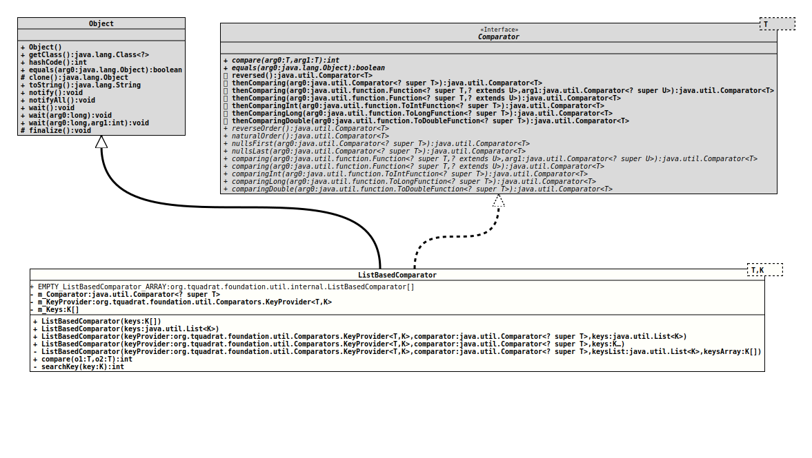

Module org.tquadrat.foundation.util
Class ListBasedComparator<T,K>
java.lang.Object
org.tquadrat.foundation.util.internal.ListBasedComparator<T,K>
- Type Parameters:
T- The type to order.K- The key type that is used to determine the order; this may be the same as the type itself.
- All Implemented Interfaces:
Comparator<T>
@ClassVersion(sourceVersion="$Id: ListBasedComparator.java 840 2021-01-10 21:37:03Z tquadrat $")
@API(status=INTERNAL,
since="0.0.5")
public class ListBasedComparator<T,K>
extends Object
implements Comparator<T>
Sometimes a special sort order is required that cannot defined as a rule.
Instead a list defines the sequence.
- Author:
- Thomas Thrien (thomas.thrien@tquadrat.org)
- Version:
- $Id: ListBasedComparator.java 840 2021-01-10 21:37:03Z tquadrat $
- Since:
- 0.0.5
- UML Diagram
-

UML Diagram for "org.tquadrat.foundation.util.internal.ListBasedComparator"
{kind=link}
-
Nested Class Summary
Nested ClassesModifier and TypeClassDescriptionprivate static classA simple implementation ofComparators.KeyProviderthat returns the instance itself as the sort order key. -
Field Summary
FieldsModifier and TypeFieldDescriptionstatic final ListBasedComparator[]An empty array ofListBasedComparator<T>objects.private final Comparator<? super T>The comparator that is used to determine the sort order for instances that do not have their keys in the list; may benull.private final Comparators.KeyProvider<T,K> The key provider.private final K[]The list with the sort order keys. -
Constructor Summary
ConstructorsModifierConstructorDescriptionListBasedComparator(List<K> keys) Creates a newListBasedComparatorinstance.ListBasedComparator(K[] keys) Creates a newListBasedComparatorinstance.ListBasedComparator(Comparators.KeyProvider<T, K> keyProvider, Comparator<? super T> comparator, List<K> keys) Creates a newListBasedComparatorinstance.privateListBasedComparator(Comparators.KeyProvider<T, K> keyProvider, Comparator<? super T> comparator, List<K> keysList, K[] keysArray) Creates a newListBasedComparatorinstance.ListBasedComparator(Comparators.KeyProvider<T, K> keyProvider, Comparator<? super T> comparator, K... keys) Creates a newListBasedComparatorinstance. -
Method Summary
Methods inherited from class java.lang.Object
clone, equals, finalize, getClass, hashCode, notify, notifyAll, toString, wait, wait, waitMethods inherited from interface java.util.Comparator
equals, reversed, thenComparing, thenComparing, thenComparing, thenComparingDouble, thenComparingInt, thenComparingLong
-
Field Details
-
EMPTY_ListBasedComparator_ARRAY
An empty array ofListBasedComparator<T>objects. -
m_Comparator
The comparator that is used to determine the sort order for instances that do not have their keys in the list; may benull. -
m_KeyProvider
The key provider. -
m_Keys
The list with the sort order keys.
-
-
Constructor Details
-
ListBasedComparator
Creates a newListBasedComparatorinstance.- Parameters:
keys- The sort order keys.
-
ListBasedComparator
Creates a newListBasedComparatorinstance.- Parameters:
keys- The sort order keys.
-
ListBasedComparator
public ListBasedComparator(Comparators.KeyProvider<T, K> keyProvider, Comparator<? super T> comparator, List<K> keys) Creates a newListBasedComparatorinstance.- Parameters:
keyProvider- The implementation ofComparators.KeyProviderthat returns the sort keys for the instances to compare.comparator- The comparator that is used to order the instances that are not listed; ifnull, those are ordered randomly in a non-consistent way if they or their keys do not implement theComparableinterface.keys- The sort order keys.
-
ListBasedComparator
@SafeVarargs public ListBasedComparator(Comparators.KeyProvider<T, K> keyProvider, Comparator<? super T> comparator, K... keys) Creates a newListBasedComparatorinstance.- Parameters:
keyProvider- The implementation ofComparators.KeyProviderthat returns the sort keys for the instances to compare.comparator- The comparator that is used to order the instances that are not listed; ifnull, those are ordered randomly in a non-consistent way if they or their keys do not implement theComparableinterface.keys- The sort order keys.
-
ListBasedComparator
private ListBasedComparator(Comparators.KeyProvider<T, K> keyProvider, Comparator<? super T> comparator, List<K> keysList, K[] keysArray) Creates a newListBasedComparatorinstance.- Parameters:
keyProvider- The implementation ofComparators.KeyProviderthat returns the sort keys for the instances to compare.comparator- The comparator that is used to order the instances that are not listed; ifnull, those are ordered randomly in a non-consistent way if they or their keys do not implement theComparableinterface.keysList- The sort order keys in a list; isnullwhenkeysArrayis notnull.keysArray- The sort order keys in an array; isnullwhenkeysListis notnull.
-
-
Method Details
-
compare
- Specified by:
comparein interfaceComparator<T>
-
searchKey
Searches the given key in the list.- Parameters:
key- The key.- Returns:
- The index in the list or
CommonConstants.NOT_FOUND(-1) if the key is not in the list.
-